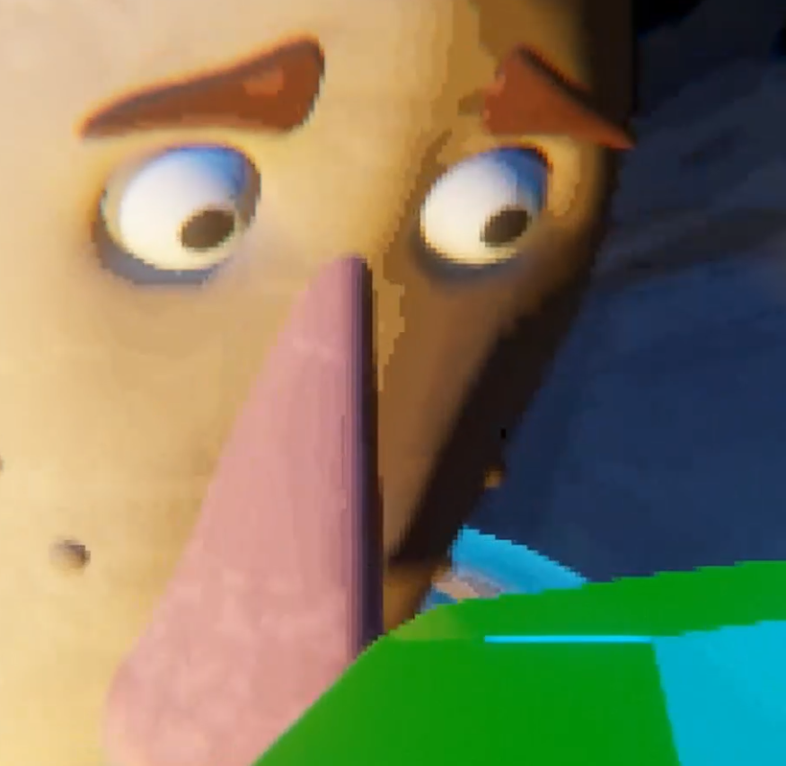
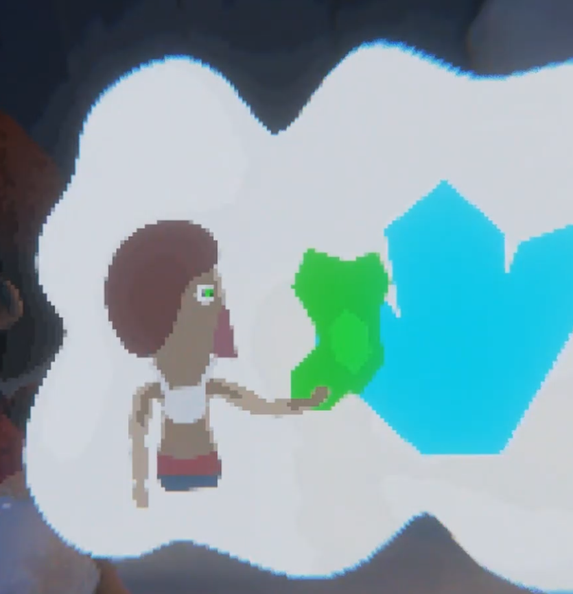

Das Thema Blackbox wird von verschiedenen Seiten Beleuchtet.
Systemtheorie:
Der Zeitstein stellt ein Input-Output System dar, mit dem Terri interagiert.
Hierbei ist Terri klar, was er als Input eingibt, jedoch ist ungewiss, wie der Stein mit Terris Input interagiert.
Der unbekannte Output und die unklare Funktionsweise des Zeitsteins stellen eine Blackbox im klassischen Sinne dar.
Psychologie:
Es wird ein klarer Einblick in Terris Gedanken gegeben. Die Hoffnungen, die sich Terri macht, werden offen gelegt.
In der Psychologie wird das menschliche Gehirn oft als Blackbox bezeichnet.
Diese wird in Form eines fiktionalen Characters.
Motivation:
Durch seine Gier angetrieben interagiert Terri mit dem Zeitstein ohne richtig zu begreifen, was er da gerade eigentlich tut.
Totz dem sorgt sie dafür, dass sich Terri die Gewinnbringensten Szenarien vorstellt.
Die Gier fungiert als Motor, treibt Terri an.
Zeitsein
Systemtheorie

Gier
Antiebskraft
Gedanken
Psychologie
P&C
Programm